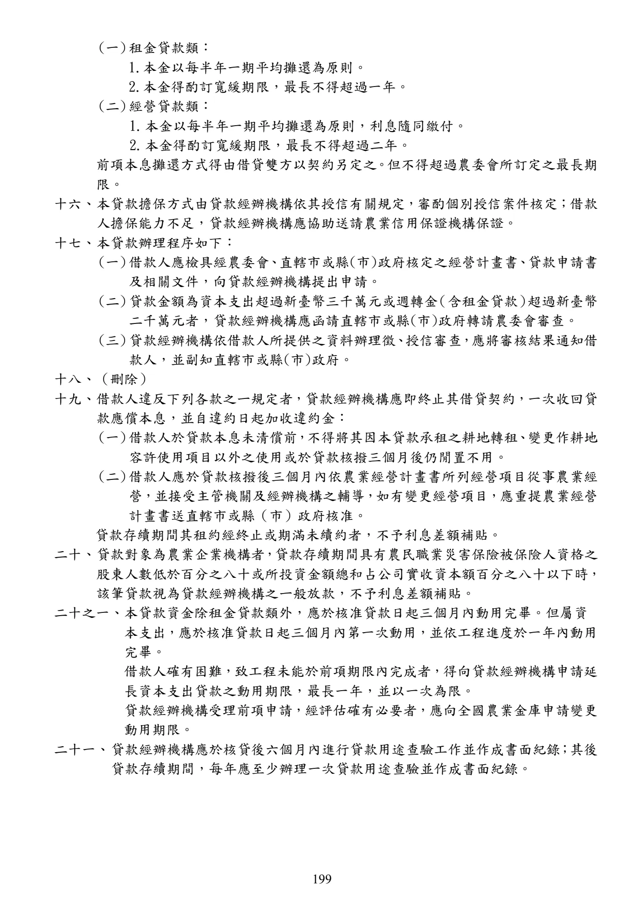

小地主大專業農貸款
手冊頁：199 PDF頁：201／359
{kind=link}

展開查看PDF原始文字層
複雜表格欄列可能因文字層順序失真，請搭配原頁預覽查閱。
(一) 租金貸款類： 1.本金以每半年一期平均攤還為原則。 2.本金得酌訂寬緩期限，最長不得超過一年。 (二) 經營貸款類： 1. 本金以每半年一期平均攤還為原則，利息隨同繳付。 2. 本金得酌訂寬緩期限，最長不得超過二年。 前項本息攤還方式得由借貸雙方以契約另定之 。 但不得超過農委會所訂定之最長期 限。 十六、 本貸款擔保方式由貸款經辦機構依其授信有關規定，審酌個別授信案件核定；借款 人擔保能力不足，貸款經辦機構應協助送請農業信用保證機構保證。 十七、 本貸款辦理程序如下： (一) 借款人應檢具經農委會 、 直轄市或縣(市)政府核定之經營計畫書 、 貸款申請書 及相關文件，向貸款經辦機構提出申請。 (二) 貸款金額為資本支出超過新臺幣三千萬元或週轉金 （含租金貸款） 超過新臺幣 二千萬元者，貸款經辦機構應函請直轄市或縣(市)政府轉請農委會審查。 (三) 貸款經辦機構依借款人所提供之資料辦理徵 、 授信審查 ， 應將審核結果通知借 款人，並副知直轄市或縣(市)政府。 十八、 （刪除） 十九、 借款人違反下列各款之ㄧ規定者，貸款經辦機構應即終止其借貸契約，一次收回貸 款應償本息，並自違約日起加收違約金： (一) 借款人於貸款本息未清償前 ， 不得將其因本貸款承租之耕地轉租 、 變更作耕地 容許使用項目以外之使用或於貸款核撥三個月後仍閒置不用。 (二) 借款人應於貸款核撥後三個月內依農業經營計畫書所列經營項目從事農業經 營 ， 並接受主管機關及經辦機構之輔導 ，如有變更經營項目 ，應重提農業經營 計畫書送直轄市或縣（市）政府核准。 貸款存續期間其租約經終止或期滿未續約者，不予利息差額補貼。 二十、 貸款對象為農業企業機構者 ， 貸款存續期間具有農民職業災害保險被保險人資格之 股東人數低於百分之八十或所投資金額總和占公司實收資本額百分之八十以下時， 該筆貸款視為貸款經辦機構之ㄧ般放款，不予利息差額補貼。 二十之一、本貸款資金除租金貸款類外，應於核准貸款日起三個月內動用完畢。但屬資 本支出，應於核准貸款日起三個月內第一次動用，並依工程進度於一年內動用 完畢。 借款人確有困難，致工程未能於前項期限內完成者，得向貸款經辦機構申請延 長資本支出貸款之動用期限，最長一年，並以一次為限。 貸款經辦機構受理前項申請，經評估確有必要者，應向全國農業金庫申請變更 動用期限。 二十一、 貸款經辦機構應於核貸後六個月內進行貸款用途查驗工作並作成書面紀錄 ； 其後 貸款存續期間，每年應至少辦理一次貸款用途查驗並作成書面紀錄。